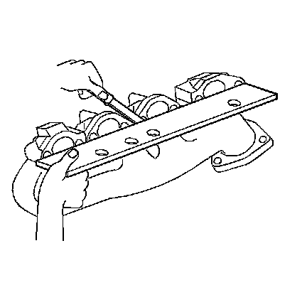

63. Exhaust Manifold Cleaning and Inspection
Exhaust Manifold Cleaning and Inspection

Important: Do not use the exhaust manifold-to-cylinder head gaskets again. Upon installation of the exhaust manifold, install a NEW gasket. An improperly installed gasket or leaking exhaust system may affect on-board diagnostics (OBD) II system performance.
1. Clean the exhaust manifold (600) and heat shield (603) in solvent.
Caution: Refer to Safety Glasses Caution.
2. Dry the exhaust manifold with compressed air.
3. Inspect the exhaust manifold-to-cylinder head gasket surface for excessive scratches or gouging.
4. Inspect for a loose, damaged, or cracked heat shield (603).
5. Inspect the studs (605) for damaged threads.

6. Use a straight edge and a feeler gage and measure the exhaust manifold cylinder head deck for warpage.
An exhaust manifold deck with warpage in excess of 0.25 mm (0.01 in) within the 2 front or 2 rear runners or 0.5 mm (0.02 in) overall, may cause an exhaust leak and may affect OBD II system performance. Exhaust manifolds not within specifications must be replaced.